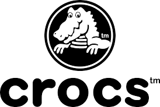

Crocs (Crox)
-
Earnings Growth
- Arguably nothing is more important than earnings growth, as surging profit levels is what most investors are after. For growth investors, double-digit earnings growth is highly preferable, as it is often perceived as an indication of strong prospects (and stock price gains) for the company under consideration.
- While the historical EPS growth rate for Crocs is 189.8%, investors should actually focus on the projected growth. The company's EPS is expected to grow 2.5% this year, crushing the industry average, which calls for EPS growth of 2.3%.
-
Cash Flow Growth
- While cash is the lifeblood of any business, higher-than-average cash flow growth is more important and beneficial for growth-oriented companies than for mature companies. That's because, growth in cash flow enables these companies to expand their businesses without depending on expensive outside funds.
- Right now, year-over-year cash flow growth for Crocs is 27.5%, which is higher than many of its peers. In fact, the rate compares to the industry average of 1.8%. While investors should actually consider the current cash flow growth, it's worth taking a look at the historical rate too for putting the current reading into proper perspective. The company's annualized cash flow growth rate has been 72.4% over the past 3-5 years versus the industry average of 11.1%.
-
Promising Earnings Estimate Revisions
- Beyond the metrics outlined above, investors should consider the trend in earnings estimate revisions. A positive trend is a plus here. Empirical research shows that there is a strong correlation between trends in earnings estimate revisions and near-term stock price movements.
- The current-year earnings estimates for Crocs have been revising upward. The Zacks Consensus Estimate for the current year has surged 4.7% over the past month.

How Crocs Became A Billion Dollar Brand